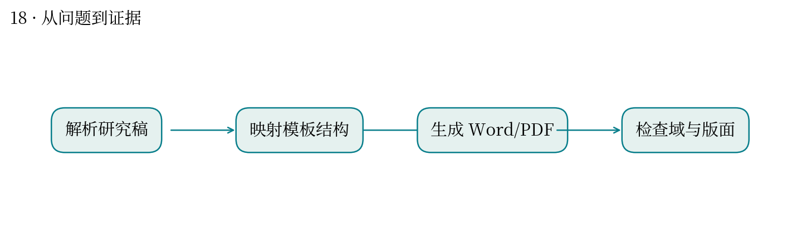
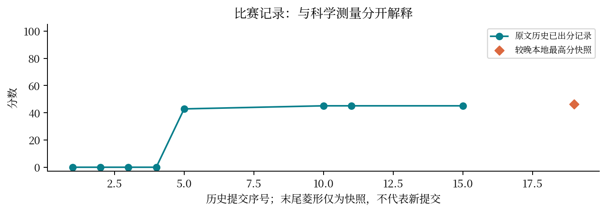

现实中想解决什么：同一篇论文投不同单位，能否减少重复排版和遗漏？
从计算到应用：结构化稿件 → 模板转换 → 可提交、内容完整的 Word/PDF。
这次实际做到哪一步：本题生成三套模板并检查内容缺失和页面问题，直接对应交稿效率。
还缺什么：页数正常不代表全部合规；还需目录、公式、引用、样式和具体单位要求逐项验收。
把内容放进 Word 模板，为什么会改变文档的真实结构？
最高分快照：46.25 · 2026-10-12T01:11:24+08:00
模板不只定义外观，还包括标题层级、目录域、编号和图表引用。截图看起来正确，文档内部仍可能错误。
生成三套高校模板版本，导出 PDF 检查页数与缺失内容，再修目录、空白尾页、公式和交叉引用。
早期记录三份 PDF 为 13/13/15 页、正文缺失与页外文字为零；较晚快照为 46.25。局部检查通过不能代替完整验收。
自动目录会读取样式；缓存文字不等于可更新的域；表格或图片可能溢出页面。
像基因组文件的显示与结构校验：浏览器里看起来正常，坐标、索引或元数据仍可能错误。也与你的毕业论文排版直接相关。
应将视觉、文档结构和模板细则分别对照评分。当前差分证据不足以认定低分由单一排版问题造成。


| attempt | 提交时间 | 分数 | 状态 |
|---|---|---|---|
| 52144 | 10-11 01:10:57 | 0.0 | 已出分 |
| 52575 | 10-11 03:01:54 | 0.0 | 已出分 |
| 52763 | 10-11 04:12:57 | 0.0 | 已出分 |
| 53345 | 10-11 09:18:12 | 0.0 | 已出分 |
| 53570 | 10-11 10:37:22 | 42.85 | 已出分 |
| 53947 | 10-11 12:18:43 | — | 排队中 |
| 54690 | 10-11 16:30:50 | — | 排队中 |
| 54718 | 10-11 16:38:25 | — | 排队中 |
| 54788 | 10-11 17:01:17 | — | 失败 |
| 54872 | 10-11 17:19:02 | 45.1167 | 已出分 |
| 55074 | 10-11 17:59:02 | 45.1167 | 已出分 |
| 55089 | 10-11 18:02:52 | — | 排队中 |
| 55115 | 10-11 18:09:30 | — | 失败 |
| 55126 | 10-11 18:11:20 | — | 排队中 |
| 55133 | 10-11 18:12:54 | 45.1167 | 已出分 |
| 55147 | 10-11 18:16:03 | — | 排队中 |
| 55515 | 10-11 19:16:59 | — | 排队中 |
| 56095 | 10-11 19:47:35 | — | 排队中 |
源文件 SHA256 见 证据清单；用 scripts/build.py 重建图表。